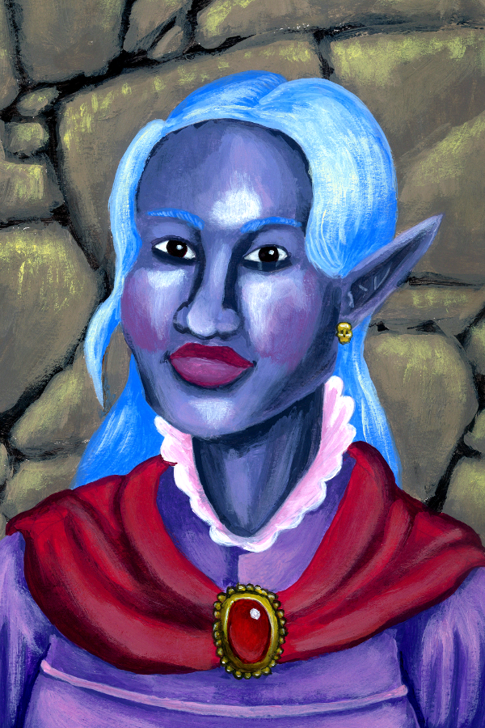

Zara Emberveil
Tiefling · Sorcerer 3 · Wild Magic · Sage
"I didn't choose this power. It chose me, at the worst possible moment, in the most dramatic possible way."
14
AC
20
HP
30 ft
Speed
+1
Initiative
+2
Prof. Bonus
10
Passive Perc.
+5
Spell Attack
13
Spell DC
3
Sorcery Pts
AC = Mage Armor (13+DEX mod = 14, lasts 8 hrs; cast before combat). Without Mage Armor: AC 11.
8
−1
STR
13
+1
DEX
14
+2
CON
13
+1
INT
10
+0
WIS
17
+3
CHA
Saving Throws
- Strength−1
- Dexterity+1
- Constitution+4
- Intelligence+1
- Wisdom+0
- Charisma+5
Skills
- Arcana (INT)+3
- Athletics (STR)−1
- Deception (CHA)+3
- History (INT)+3
- Insight (WIS)+2
- Intimidation (CHA)+3
- Investigation (INT)+1
- Perception (WIS)+0
- Persuasion (CHA)+5
- Stealth (DEX)+1
Attacks
| Weapon / Cantrip | To Hit | Damage | Notes |
|---|---|---|---|
| Fire Bolt | +5 | 2d10 fire | Cantrip; range 120 ft; ignites flammable objects |
| Shocking Grasp | +5 | 2d8 lightning | Cantrip; adv vs metal armour; target can't react |
| Dagger | +3 | 1d4+1 piercing | Melee or thrown 20/60 |
Equipment
- Arcane focus (crystal shard)
- Component pouch (backup)
- Scholar's pack (books, ink, parchment)
- 2 daggers
- Fine robes
- 30 gp
Racial Traits (Tiefling)
Darkvision 60 ft. Hellish Resistance: resistance to fire damage. Infernal Legacy: Thaumaturgy cantrip. At this level: Hellish Rebuke 1/LR (reaction when hit; attacker takes 2d10 fire, CON save DC 11 for half).
Class Features
Wild Magic Surge
After you cast a spell of 1st level or higher, the DM can have you roll a d20. On a 1, a random wild magic effect occurs (roll d100 on the Wild Magic Surge table). The DM decides when this happens, often after you use Tides of Chaos.
New player tip: This is mostly a fun flavour mechanic for the DM. Don't let it deter you from casting — the surges are as often helpful as harmful (fireball centred on self, grow to double size, etc.).
Tides of Chaos1 / Long Rest
Before you make an attack roll, ability check, or saving throw, you can give yourself advantage on the roll. After you do so, the DM can cause a Wild Magic Surge at any time before you use this feature again (without requiring a d20 roll). When you cast a 1st-level spell or higher and a surge doesn't occur, you regain the ability to use Tides of Chaos.
Font of Magic3 Sorcery Points / Long Rest
You can convert sorcery points to spell slots (2 pts = 1st level slot; 3 pts = 2nd level) or convert spell slots to sorcery points (1 slot = its level in pts). Use this to squeeze extra spells from a combat-heavy session.
Metamagic: Twinned SpellCosts spell's level in sorcery points
When you cast a spell that targets only one creature, you can spend sorcery points equal to the spell's level to target a second creature in range with the same spell. Scorching Ray targets 3 creatures already, so it doesn't qualify — use on single-target spells like Misty Step (1 pt) or Hold Person (2 pts).
New player tip: Twinned Misty Step (2 pts total for 2 people) lets both you and an ally teleport 30 ft. Twinned Hold Person (4 pts for 2 targets) paralyzes two enemies at once — massive.
Metamagic: Careful Spell1 Sorcery Point
When you cast a spell that forces others to make saving throws, choose up to CHA mod (3) creatures to automatically succeed. Lets you drop a Thunderwave or Shatter in a crowd without hurting your allies.
Spells
Spellcasting: CHA mod (+3). Spell save DC 13. Spell attack +5. Recover all slots on long rest. You know your spells permanently — no daily preparation.
4
1st level
2
2nd level
Cantrips (always available)
- CantripFire Bolt — +5 ranged; 2d10 fire; 120 ft. Your main damage cantrip.
- CantripShocking Grasp — +5 melee; 2d8 lightning; advantage vs metal armour; target can't use reactions until your next turn. Use as an escape when grabbed.
- CantripMage Hand — Spectral hand within 30 ft; manipulate objects, open doors, retrieve items. No combat use but extremely versatile.
- CantripPrestidigitation — Minor magical tricks: light a candle, clean clothes, make a sound, create a smell. Utility and roleplay.
- TieflingThaumaturgy — Minor environmental effects: make your voice boom, cause tremors, make your eyes glow. Pure flavour.
Spells Known (6)
- 1stMage Armor — Touch self; AC becomes 13+DEX for 8 hrs. Cast before every adventuring day. No concentration.
- 1stMagic Missile — 3 darts that auto-hit (no roll); each does 1d4+1 force. Total 3d4+3 guaranteed. Use when you can't afford to miss.
- 1stThunderwave — CON save DC 13; 2d8 thunder in 15 ft cube from you; pushed 10 ft on fail. Great panic button when surrounded.
- 2ndMisty Step — Bonus action; teleport up to 30 ft to a space you can see. Your escape route. Also offensive positioning.
- 2ndScorching Ray — +5; three rays of 2d6 fire each; each ray targets separately (can split among targets). Best DPR spell at this level.
- 2ndShatter — CON save DC 13; 3d8 thunder in 10 ft sphere. Destroys non-magic objects; disadvantage for constructs.
Tiefling (1/Long Rest):
- ReactionHellish Rebuke — When a creature hits you: it takes 2d10 fire damage (CON save DC 11 for half). Free counter-attack.
Tip: Open at range with Fire Bolt or Scorching Ray. If enemies close in, use Shocking Grasp + Misty Step to escape. Careful Spell + Shatter/Thunderwave lets you bomb a crowd without hitting allies.
Once Per Long Rest · Character Quirk
Controlled Misfire
When a spell you cast fails — you miss all spell attack rolls, or every target succeeds on its saving throw — you can choose to convert the failure into a spectacular harmless light show: showers of sparks, miniature thunderclaps, a brief aurora. The spell still failed. You recover the spell slot. Mechanically this is simply a free spell slot refund on a bad roll. Narratively, it looked completely intentional and you will be maintaining that position if asked. Wild Magic note: the DM may still roll for a surge. Some shows play to empty houses.
Personality
Trait
I want everything — the magic, the fame, the knowledge — and I want it faster than is reasonable.
Ideal
Knowledge. Magic that isn't understood is dangerous — which is exactly why I must understand all of it.
Bond
A wild magic surge killed someone I loved. I will learn to control this power, or die trying.
Flaw
I don't handle failure gracefully. When my magic misfires, I deflect blame onto anyone nearby.
Portrait: Joseph Hewitt · CC-BY 4.0